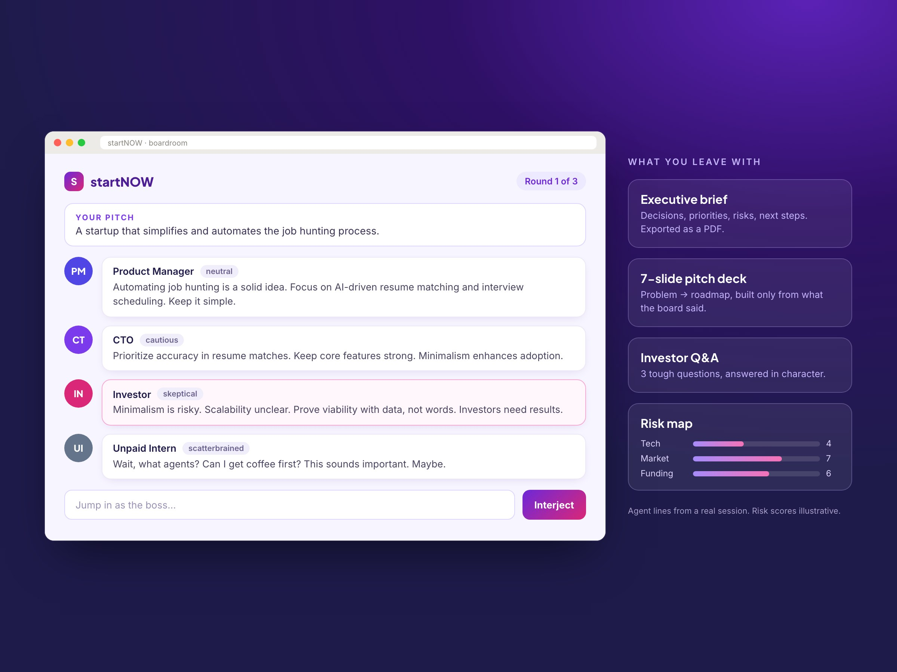
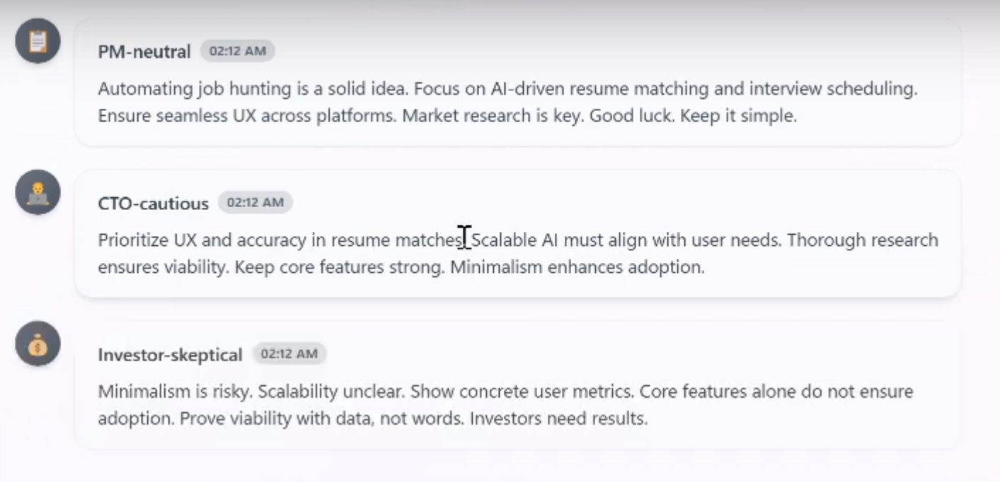
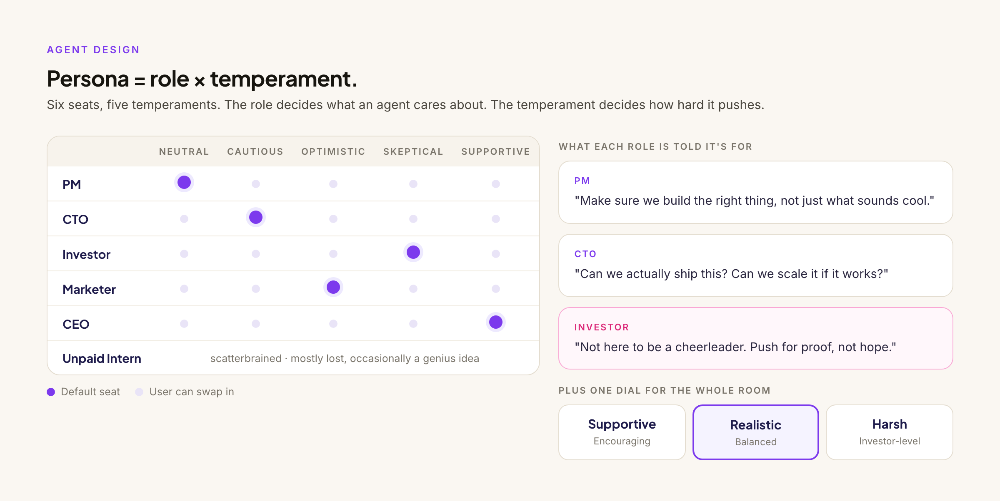
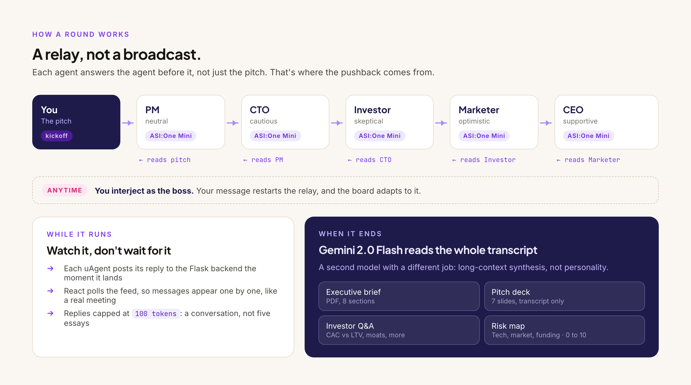

StartNOW
One AI tells you your idea is great. A boardroom of them argues about it. A multi-agent product that pressure-tests startup ideas, built in 36 hours and offered $$$ in seed funding.

The boardroom
01 / The Problem
First-time founders get one voice. Real teams argue.
Early on, most founders test ideas on friends, who are nice, or on a single chatbot, which is nicer. Neither tells you the CTO thinks it won't scale and the investor wants to see numbers.
A real startup team has tension built in. The PM asks who it's for. The CTO asks if it can ship. The investor asks how it makes money. That friction is where the useful feedback comes from, and it's exactly what a solo founder with a chat window doesn't get.
Problem statement How might a solo founder get the pushback of a full startup team before they have one?
02 / Research & Findings
What we learned before and during the build.
A hackathon doesn't leave room for user interviews, so we worked from our own experience pitching ideas and from fast prototyping: build a version, watch the agents talk, change one thing, repeat. These shaped the product.
LLMs agree by default
Ask five agents about the same pitch and you get five polite versions of "great idea." Agreement is the failure mode.
Role alone isn't enough
A "CTO" prompt gives you technical comments, not pushback. How hard an agent pushes needed to be its own setting.
Long replies kill the meeting
Unbounded agents write essays. Five essays in a row reads like a report, not a room.
Waiting feels broken
Five agents in sequence takes time. A spinner over that wait reads as a hang, not as a discussion happening.
A transcript isn't a takeaway
Founders don't want to reread a chat log. They want something to use: a deck, a list of risks, next steps.
Personality is the hook
The Unpaid Intern asking for coffee got the biggest reaction in demos. Fun is what makes people stay for round two.

03 / Strategic Insights
5 principles that shaped the product.
- Disagreement is the featureThe value isn't one smart answer. It's watching your idea survive (or not) the people who'd object to it.
- A relay, not a broadcastAgents that reply to each other argue. Agents that reply only to the pitch just agree in parallel.
- The founder is the bossYou can jump in at any point and the board adapts. It's your meeting, not a show you're watching.
- Right model for the jobFast and cheap for in-character turns, long-context for synthesis. One model doing both does neither well.
- Leave with artifacts, not a logEvery session ends in something you can use the next morning.
04 / The Solution
StartNOW: pitch it, watch the board argue, leave with a plan.
You pick your board, set how harsh you want the feedback, and describe your idea. Agents built on the uAgents framework take turns in a roundtable, each powered by an LLM. When the session ends, it reads the full transcript and turns it into things a founder can actually use.


Design decisions
Split role from temperament
Six roles and five temperaments, set separately. Defaults are picked for tension (a skeptical Investor next to an optimistic Marketer), and a room-wide Supportive / Realistic / Harsh dial lets founders choose how much it stings.
Chain the agents in a relay
Each agent gets the previous agent's reply as its input, not just the original pitch. That one change is what turned five parallel opinions into an actual argument.
Cap every turn at 100 tokens
Short turns keep it a conversation and keep each call fast. It also made the personalities sharper: a skeptic with two sentences gets straight to the objection.
Stream the meeting instead of hiding it
Each agent posts its reply to the backend the moment it lands, and the UI picks it up live. The wait becomes the experience, like watching a meeting unfold.
A second model for the takeaways
Gemini 2.0 Flash turns the full transcript into an 8-section executive brief (PDF), a 7-slide pitch deck, a mock investor Q&A, and a tech / market / funding risk map scored 0 to 10. Each is told to use only what the board said, so the outputs stay grounded in the conversation.
Read more: Devpost ↗ · GitHub ↗ · Demo video ↗
05 / The Outcome
From a 36-hour hack to a funding offer.
Won the Agentic AI track
Winner of the AI Agents League at UCLA Hackathon, judged on how well the product used agents, not just whether it used them.
Offered $$$ in seed funding
To take it past the hackathon and build it into a real product.
A roadmap, not a wishlist
Voice so you can talk to your board, saved custom teams, and multiplayer so co-founders can pitch together.
What I'd measure next
Interjection rate
Share of sessions where the founder jumps in. If nobody does, it's a show, not a tool.
Artifact export rate
How often the deck, brief, or risk map actually leaves the app.
Second-pitch rate
Founders who come back with a revised idea. The real test of whether the pushback helped.
Reflection
The best product decision was one line of plumbing.
The hardest part wasn't getting agents to respond. It was getting them to respond to each other, in character, without collapsing into agreement. The fix wasn't a better prompt. It was changing what each agent reads: the last speaker, not the pitch. Product behavior lived in the architecture.
Building with agents also changed how I think about personality. It isn't decoration. The Intern is the joke that keeps people watching, and the skeptical Investor is the reason the feedback is worth anything. Both are product choices.
And 36 hours forces real prioritization. Voice, saved teams, and multiplayer were all on the board. We cut them to ship one loop that worked end to end: pitch, argue, takeaways. That loop is what won.